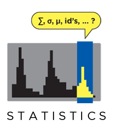

BEDOPS: the fast, highly scalable and easily-parallelizable genome analysis toolkit¶
BEDOPS is an open-source command-line toolkit that performs highly efficient and scalable Boolean and other set operations, statistical calculations, archiving, conversion and other management of genomic data of arbitrary scale. Tasks can be easily split by chromosome for distributing whole-genome analyses across a computational cluster.
You can read more about BEDOPS and how it can be useful for your research in the Overview documentation, as well as in the original manuscript.
- x86-64 (64-bit) binaries
- i386 (32-bit) binaries
- Installation instructions for Linux hosts
- Intel (32-/64-bit, 10.7-10.10) installer package
- Installation instructions for Mac OS X hosts
- Source code (tar.gz)
- Source code (zip)
- Compilation instructions
|
|
|
|  |  |
|
|
|
|
|
|
|
Citation¶
If you use BEDOPS in your research, please cite the following manuscript:
Shane Neph, M. Scott Kuehn, Alex P. Reynolds, et al. BEDOPS: high-performance genomic feature operations. Bioinformatics (2012) 28 (14): 1919-1920. doi: 10.1093/bioinformatics/bts277
Table of contents¶
- 1. Overview
- 2. Installation
- 3. Revision history
- 4. Usage examples
- 4.1. Visualizing the relationship of SNPs and generic genomic features
- 4.2. Collapsing multiple BED files into a master list by signal
- 4.3. Measuring the frequency of signed distances between SNPs and nearest DHSes
- 4.4. Finding the subset of SNPs within DHSes
- 4.5. Smoothing raw tag count data across the genome
- 4.6. Efficiently creating Starch-formatted archives with a cluster
- 4.7. Working with many input files at once with
bedopsandbedmap
- 5. Performance
- 6. Reference
- 6.1. Set operations
- 6.1.1. bedops
- 6.1.1.1. Inputs and outputs
- 6.1.1.2. Usage
- 6.1.1.3. Operations
- 6.1.1.3.1. Everything (-u, –everything)
- 6.1.1.3.2. Element-of (-e, –element-of)
- 6.1.1.3.3. Not-element-of (-n, –not-element-of)
- 6.1.1.3.4. Complement (-c, –complement)
- 6.1.1.3.5. Difference (-d, –difference)
- 6.1.1.3.6. Symmetric difference (-s, –symmdiff)
- 6.1.1.3.7. Intersect (-i, –intersect)
- 6.1.1.3.8. Merge (-m, –merge)
- 6.1.1.3.9. Partition (-p, –partition)
- 6.1.1.3.10. Chop (-w, –chop)
- 6.1.1.3.11. Stagger (-x, –stagger)
- 6.1.1.3.12. Per-chromosome operations (–chrom)
- 6.1.1.3.13. Range (–range)
- 6.1.1.4. Starch support
- 6.1.1.5. Error checking (–ec)
- 6.1.1.6. Tips
- 6.1.2. bedextract
- 6.1.3. closest-features
- 6.1.4. Nested elements
- 6.1.1. bedops
- 6.2. Statistics
- 6.2.1. bedmap
- 6.2.1.1. Inputs and outputs
- 6.2.1.2. Usage
- 6.2.1.3. Operations
- 6.2.1.4. I/O event handling
- 6.2.1.5. Per-chromosome operations (–chrom)
- 6.2.1.6. Starch support
- 6.2.1.7. Error checking
- 6.2.1.8. Endlines
- 6.2.1.9. Downloads
- 6.2.1. bedmap
- 6.3. File management
- 6.3.1. Sorting
- 6.3.2. Compression
- 6.3.3. Data conversion
- 6.1. Set operations
- 7. Summary
- 8. Release